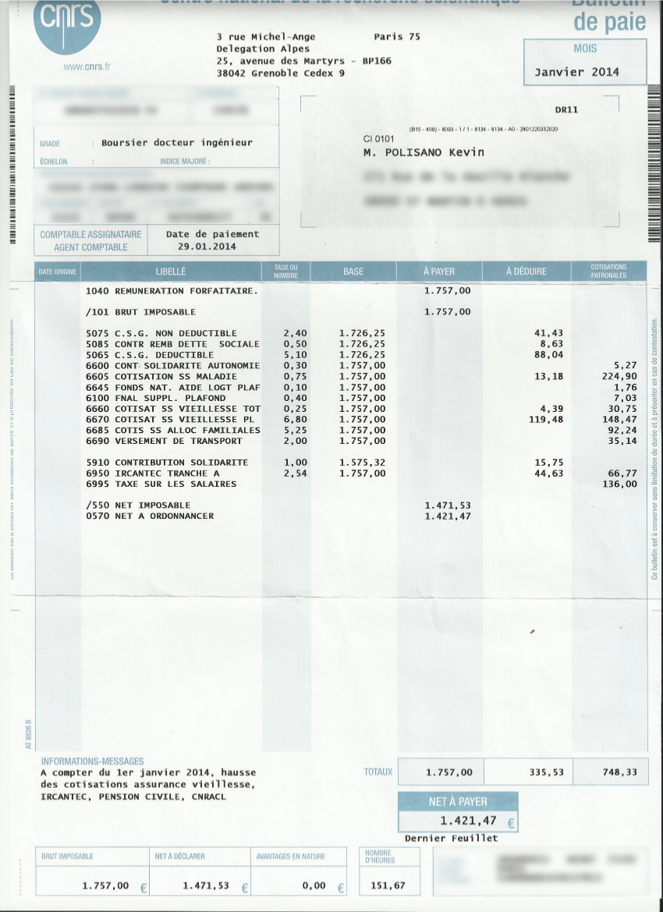
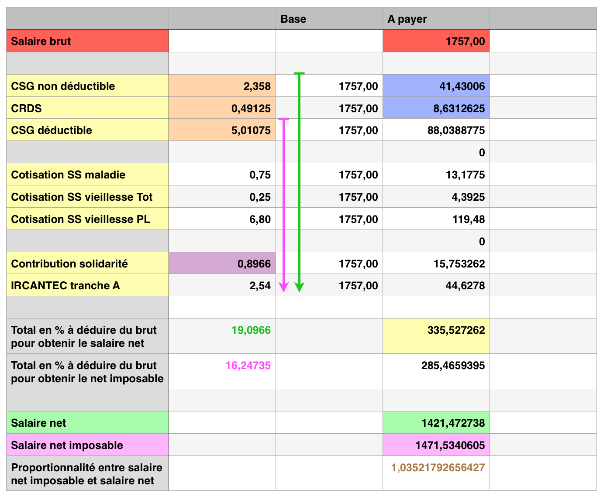

Vous connaissez certainement tous la différence entre le salaire brut et le salaire net, mais :
- Savez vous comment ces cotisations salariales sont calculées ?
- A quoi servent-elles ?
- Quel pourcentage de votre salaire brut représentent-elles ?
- Avez vous remarqué que votre salaire net imposable était différent du salaire net réellement perçu ?
Voilà un certain nombre de questions que je me suis posé lorsque que j’ai eu sous le nez ma première fiche de paie, et auxquelles je vais tâcher de répondre.
Pour commencer jetons un oeil à une telle fiche de paie :

Afin d’y voir plus clair, j’ai annoté et colorié la fiche de paie, ce qui facilitera les explications :

De quoi sont constituées les cotisations salariales ?
Les cotisations salariales regroupent un certain nombre de cotisations sociales, sommes qui sont prélevées sur votre salaire brut et collectées par différentes caisses afin d’être redistribuées, elles reposent donc sur un principe de solidarité. En contrepartie nous bénéficions d’une couverture partielle ou totale de frais divers, engendrés par l’un des grands « risques » que sont le chômage, la vieillesse, la famille, la maladie et les accidents du travail et maladies professionnelles. Ces cotisations permettent entre autres de payer nos retraites.
La liste des cotisations (non exhaustive) présentes sur ma fiche de paie est composée de :
- CSG non déductible
- Contribution au Remboursement de la Dette Sociale (CRDS)
- CSG déductible
- Cotisation assurance maladie
- Cotisation assurance vieillesse sur le salaire Total
- Cotisation assurance vieillesse sur le salaire plafonné
- Contribution exceptionnelle de solidarité
- Ircantec tranche A
Explications :
- On peut voir que je cotise pour l’assurance maladie, qui nous protège des cinq risques suivants : maternité, maladie, accidents du travail/maladies professionnelles, invalidité, décès. Elle finance près de 75 % des dépenses de santé.
- Je cotise également pour l’assurance vieillesse, qui gère la retraite des salariés “classiques”, c’est-à-dire hors secteur agricole et fonction publique. La cotisation est composée de 2 taux distincts, l’un s’appliquant au salaire total, et l’autre à la part de salaire qui est inférieure au plafond de la sécurité sociale.
- A cette dernière cotisation s’ajoute l’Ircantec (appliquée sur la tranche A également), qui est un régime de retraite complémentaire, qui comme son nom l’indique complète la retraite de la caisse d’assurance vieillesse.
- Une contribution exceptionnelle de la solidarité, destinée à financer l’aide de l’État aux allocations de solidarité versées aux travailleurs privés d’emploi qui ne peuvent en raison de leur situation personnelle, bénéficier du régime d’assurance chômage.
- La CSG (Contribution Sociale Généralisée), qui est “un impôt assis sur l’ensemble des revenus des personnes résidant en France. À la différence des cotisations sociales qui ne portent que sur les revenus d’activité, la CSG concerne, outre les revenus d’activité et de remplacement (allocations chômage, indemnités journalières), les revenus du patrimoine, les produits de placement ou les sommes engagées ou redistribuées par les jeux. La CSG vise à diversifier le mode de financement de la protection sociale qui, avant la création de cet impôt, reposait essentiellement sur les cotisations sociales et ne concernait que les salariés.” L’impôt CSG est composée d’une part déductible et non déductible des … impôts ! Nous y reviendrons.
- Vient enfin la CRDS (Contribution pour le remboursement de la dette sociale), est un impôt créé dans le but de résorber la dette de la sécurité sociale.
Comment les cotisations salariales sont-elle calculées ?
Le taux (en pourcentage) de chacune des ces cotisations est donné dans la colonne “Taux du nombre”, et s’applique au nombre correspondant de la colonne “Base” qui est en général le salaire brut. Sauf pour la CSG/CRDS et la Contribution solidarité dont la base est différente. Le résultat Taux*Base figure dans la colonne “A déduire”.
- La base de la CSG/CRDS correspond à 98,25% du salaire brut, soit effectivement : 0,9825*1757 = 1726,25 €.
- La base de Contribution Exceptionnelle de Solidarité, se calcule en soustrayant au salaire brut les cotisations vieillesses (Tot, PL, Ircantec) et maladies, soit : 1757-13,18-4,49-119,48-44,63 = 1575,32 €.
En ajoutant toutes les cotisations en jaune on obtient le montant des cotisations salariales :
cotisations salariales = 41,43+8,63+88,04+13,18+4,39+119,48+17,75+44,63 = 335,53 €
Quel pourcentage du salaire brut représentent-elles ?
Pour y répondre il faut dans un premier temps faire en sorte que tous les taux s’appliquent à la même base, à savoir le salaire brut :
- La base de la CSG/CRDS correspond à 98,25 % du salaire brut, donc cela revient au même de garder la base du salaire brut et de multiplier les taux par 98,25%. Ainsi les nouveaux taux sont les suivants :
CSG non déductible = 2,40 x 0,9825 = 2,358
CRDS = 0,5 x 0,9825 = 0,481
CSG déductible = 5,10 x 0,9825 = 5,01
- La base de la Contribution solidarité, on l’a vu, se calculait comme suit :
1757-13,18-4,49-119,48-44,63 = 1575,32 €.
Autrement dit : 1757 x (1-0,75%-0,25%-6,80%-2,54%) = 1575,32 €.
Le nouveau taux est donc : 1-0,75%-0,25%-6,80%-2,54% = 0,896 %
En sommant tous les taux de cotisations on obtient finalement :
cotisations salariales = 19,1 % du salaire brut
Remarque : en moyenne on estime que les cotisations salariales représentent 22 % du salaire brut.
On peut alors s’amuser à donner le salaire net en fonction du brut, de même le salaire net imposable en fonction du brut ou encore le salaire net imposable en fonction du salaire net, et vice versa.

Exemple : Calcul du smic net imposable 2014
smic net imposable = smic net + CSG non déductible + CRDS
D’après le tableau précédent: CSG non déductible+CRDS=(2,36 %+0,49%)xsmic brut
Comme à ce jour on a : smic brut = 1445,38 € et smic net = 1128,70 €
smic net imposable = 1128,70 + (2,36%+0,49%)x1445,38 = 1173,36
Pourquoi le salaire net imposable est-il supérieur au net perçu ?
Ce constat un peu curieux, réside dans le fait que le salaire net imposable est obtenu en ajoutant au salaire net perçu la CSG non déductible et la CRDS :
salaire net imposable = salaire net perçu + CSG non déductible + CRDS
Comment est calculé votre salaire net à partir du salaire brut ?
Le salaire brut est ici l’intégralité de la somme délivrée par le CNRS : 1757,00 €
De cette somme, on soustrait un certain nombre de cotisations salariales pour obtenir le salaire net (la somme versée sur notre compte en banque).
salaire net = salaire brut - cotisations salariales
Remarque : on ne tient pas compte ici de la dernière colonne qui correspond aux cotisations patronales et qui sont simplement données à titre indicatif.
salaire net = 1757,00 - 335,53 = 1421,47 €